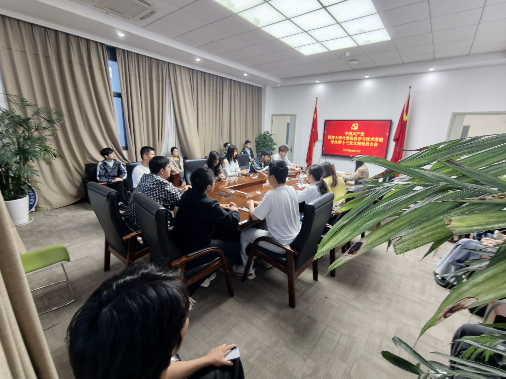

学生第十三党支部大会——换届启动与入党积极分子确定
研究换届选举启动工作，审议确定 10 名入党积极分子，集中学习习近平总书记重要讲话精神。
- 地点：嘉定校区安楼 A105。
- 参会：支部党员 19 人出席，唐思卓主持。
- 重点：换届选举启动、入党积极分子推优、正确政绩观学习与讨论。
Symposium Notes
Session Archive
研究换届选举启动工作，审议确定 10 名入党积极分子，集中学习习近平总书记重要讲话精神。

研究确定新一届支委会候选人预备人选，学习习近平总书记给四所交大回信精神，部署"对标争先"项目。

正式选举产生新一届党支部委员会，开展 5 月集中学习，审议确定 19 名发展对象人选。
Highlights
摘录座谈会中的关键观点，保留交流温度与思想深度。
"正确的政绩观就是摒弃功利主义，坚守求真务实。学生党员要把同学们的认可、学业上的真才实学，作为青年党员最看重的'政绩'。"
"面对AI浪潮，越得牢记'脚踏实地，埋头苦干，不驰于空想，不骛于虚声'。少点空想，多点实干，踏踏实实地写好每一行代码。"
"基础研究是科技报国的必经之路，没有扎实的理论基础，应用创新就容易成为'空中楼阁'。学思用贯通、知信行统一。"
Discussion Hub
基于座谈会内容发起话题讨论，围绕关键问题提出具体建议与行动方案。
今日更新 · 2 个话题活跃
围绕"对标争先"项目，探讨如何用专业技术赋能支部理论学习与网络思政传播。
聚焦青年党员的政绩观养成，结合专业学习探讨科技自立自强的实践路径。
当前话题：—
请选择左侧话题，查看讨论详情